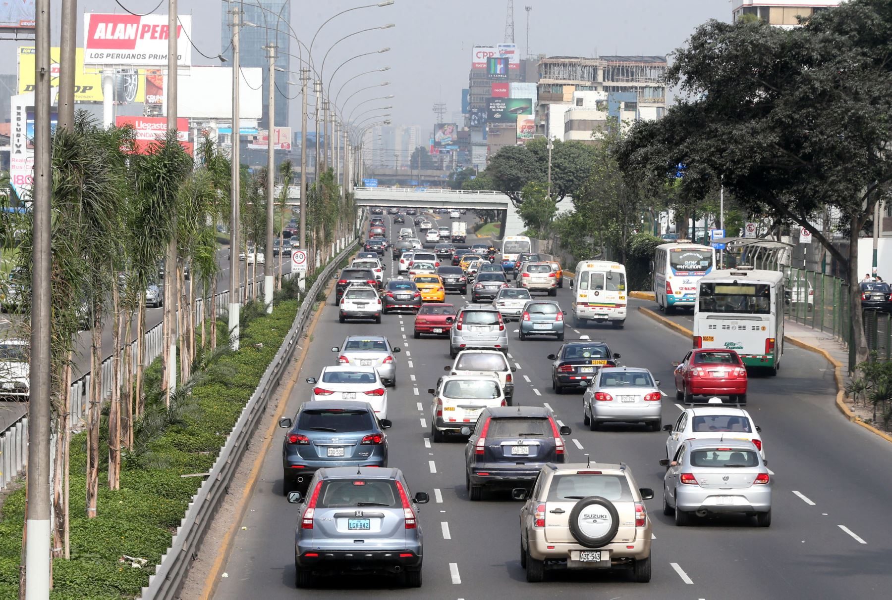

Consulta y Pago de Impuesto Vehicular
Propiedad Vehicular
El Impuesto al Patrimonio Vehicular grava la propiedad de los vehículos (automóviles, camionetas, station wagons, buses y camiones) con una antigüedad no mayor a tres (3) años desde su primera inscripción en el Registro de Propiedad Vehicular de la SUNARP.
Información Clave:
- Tasa del impuesto: Aplica el 1% de la base imponible del valor del vehículo asignado en la tabla de valores del MEF.
- Sujetos obligados: Personas naturales o jurídicas propietarias del vehículo al 1 de enero de cada ejercicio gravable.
- Requisitos para consulta: Número de Placa del vehículo o Documento Nacional de Identidad del propietario registrado.